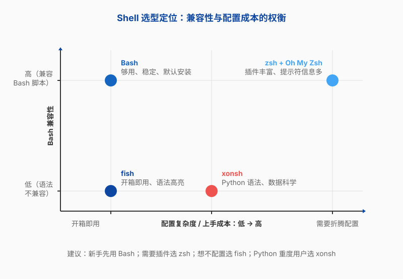
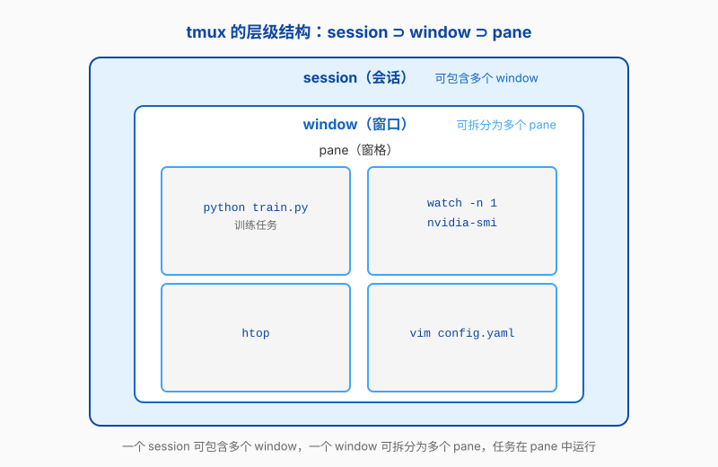
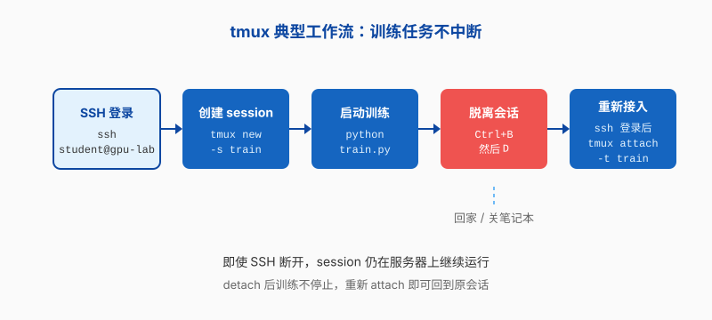
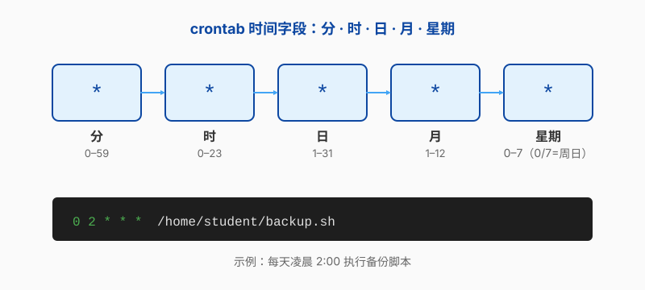
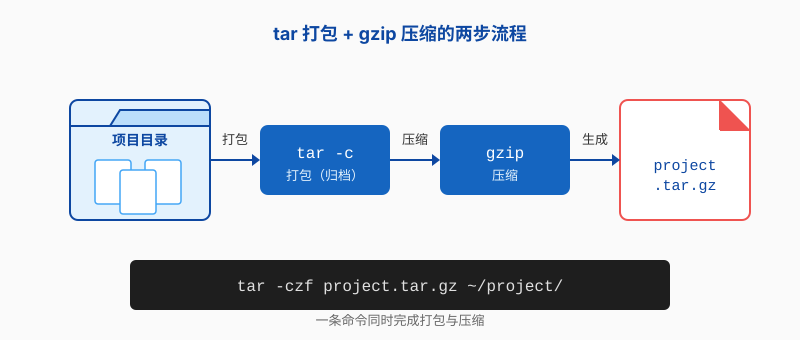

第四章 Linux 好用的工具
第二章和第三章把 Linux 的日常框架搭起来了：你会走路，也知道怎么安全地装软件。但真要在服务器上日复一日地干活，“会用”和“顺手”之间还有一段距离。你会希望提示符能一眼告诉你身处何地、哪个 git 分支开着；希望凭几个零碎字符就能找到文件；希望合上笔记本后训练不会白费；希望那些定期该做的事，能交给服务器自己去守夜。这一章要解决的，就是这些摩擦——不是推翻前面的基础，而是让命令行更聪明、更不怕断线、更自动化。
更聪明的 Shell
第二章我们学了 Bash，记了不少命令和快捷键。Bash 够用、稳定、几乎所有 Linux 发行版都默认安装——但它是唯一的选择吗？
打个比方：浏览器有 Chrome、Firefox、Safari，它们都能打开网页，收藏夹和标签页的用法却各不相同，总有人觉得 Chrome 的插件更好用、Firefox 更注重隐私。Shell 也是类似的道理。它们都能执行 ls、cd、grep，但在补全智能程度、提示符美观度、配置上手成本这几个维度上，差别还挺大。
这一节介绍三种比 Bash “更聪明”的 Shell：zsh、fish 和 xonsh。它们不是来取代 Bash 的——你写的脚本、自动化脚本仍然应该用 Bash，保证可移植性。但它们可以让你的日常交互体验上升一个台阶：更省力的补全、更直观的语法高亮、更漂亮的信息展示。
不过有一句话要先放在前面：如果你是第一次接触命令行，刚学完第二章，先用 Bash 打好基础。这就像学开车——方向盘和油门还没踩熟，就别急着换跑车。等你对 ls、cd、grep、管道这些概念已经很熟了，命令行的肌肉记忆也建立起来了，再回来看这一节，你会更清楚自己到底想要什么。
zsh — 插件生态最丰富的 Shell
Bash 默认的 Tab 补全比较朴素：敲 git c 再按 Tab，它可能只会把 commit、checkout、clone 列出来让你选。但如果你装了 zsh 的 git 插件，它会直接在补全候选里显示每个子命令的简短说明——比如 commit -- record changes to repository。不用再切到浏览器查手册，思路不会断。
这就是 zsh 最大的卖点：插件系统。zsh（Z Shell）本身兼容 Bash 的绝大多数语法，你会的 Bash 命令在 zsh 里一个都不浪费。但它在 Bash 的基础上加了三样东西：更智能的 Tab 补全、拼写纠错（比如你敲 sl 它会问你是不是想敲 ls）、以及一套主题系统，让你可以定制提示符的外观——把当前 git 分支、Python 虚拟环境、命令执行时间都显示在提示符里。
单独装 zsh 只能解锁基础功能，真正好用的是搭配 Oh My Zsh——一个社区驱动的 zsh 配置框架。它把几百个插件和主题打包在一起，你只需要在配置文件里写一行就能启用。
在 Debian/Ubuntu 上安装 zsh 并切换到它：
student@debian:~$ sudo apt install zsh
...
student@debian:~$ chsh -s /bin/zsh
Password:chsh（change shell）修改的是你的默认登录 Shell。改完之后，下次登录就会自动进入 zsh。如果你想立刻试试效果，也可以直接敲 zsh 打开一个 zsh 会话——这时候并不会改默认 Shell，只是一个临时体验，输 exit 就能回到 Bash。
安装 Oh My Zsh：
student@debian:~$ sh -c "$(curl -fsSL https://raw.githubusercontent.com/ohmyzsh/ohmyzsh/master/tools/install.sh)"第三章提醒过，curl | sh 这种一键脚本要先确认来源，最好把脚本下载下来审阅再执行。这里用的是 Oh My Zsh 官方仓库的地址，确认域名无误后再运行。
装好之后，你的家目录下会多一个 .zshrc 文件，里面有一个 plugins=() 的配置行。推荐加三个插件：git 是 Oh My Zsh 内置的，不用额外安装；zsh-autosuggestions 和 zsh-syntax-highlighting 则需要先用 git clone 下载：
student@debian:~$ git clone https://github.com/zsh-users/zsh-autosuggestions \
${ZSH_CUSTOM:-~/.oh-my-zsh/custom}/plugins/zsh-autosuggestions
student@debian:~$ git clone https://github.com/zsh-users/zsh-syntax-highlighting.git \
${ZSH_CUSTOM:-~/.oh-my-zsh/custom}/plugins/zsh-syntax-highlighting安装完成后，在 .zshrc 中找到 plugins=() 这一行，改成：
plugins=(git zsh-autosuggestions zsh-syntax-highlighting)改完执行 source ~/.zshrc 使其生效。
zsh-autosuggestions 会根据你的历史命令，在你敲字时用灰色提示补全建议——按一下右箭头就能采纳。比如你昨天敲过 ssh student@gpu-lab01，今天刚打完 ssh，后面就自动浮现出来了。zsh-syntax-highlighting 则是实时检查你输入的命令语法：有效的命令显示为绿色，打错了的显示为红色，还没敲完的路径显示下划线。这两个插件装好之后，命令行的交互体验会从“盲打”变成“有导航”。
Oh My Zsh 还自带几百个主题。默认的 robbyrussell 主题会在提示符里显示当前 git 分支和仓库状态，对于经常用 git 管理代码的同学非常实用。如果你做 AI 训练，经常在不同 Python 虚拟环境里切换，也有很多主题可以显示当前激活的 conda 或 venv 环境名。
fish — 开箱即用的友好 Shell
zsh 强大，但需要配置。装 zsh、装 Oh My Zsh、挑插件、改 .zshrc——这一套走下来，虽然不算难，但总归要花些时间。有没有一个 Shell，装完就能用，不用折腾？有，就是 fish。
fish（Friendly Interactive SHell）的设计哲学和 zsh 完全不同。它不做兼容 Bash——这是故意的。fish 的语法和 Bash 不兼容，你写的 Bash 脚本不能用 fish 来执行。但这恰恰让 fish 可以甩掉历史包袱，做一套更清爽的交互体验。
装完 fish，不需要装任何插件，你就能得到：彩色语法高亮（命令打对了是蓝色，打错了是红色）、基于历史的自动建议（灰色文字，右箭头采纳）、以及一个网页版配置界面（在浏览器里用鼠标勾选主题和配色，不用改配置文件）。
student@debian:~$ sudo apt install fish
...
student@debian:~$ fish
Welcome to fish, the friendly interactive shell
student@debian ~>注意提示符变了——fish 默认用 ~> 而不是 $，当前目录用波浪线简写显示。刚一进入，你可能就会注意到刚才说的自动建议：fish 会默默记住你敲过的命令，下次敲类似前缀时用灰色字补出来。你甚至不需要按 Tab——它直接就显示在光标后面了。
怎么打开那个网页配置界面？在 fish 里敲：
student@debian ~> fish_config浏览器会自动打开一个本地页面，你可以在里面选配色主题、预览提示符样式、查看已定义的函数和缩写，全部用鼠标点击完成。对于刚从图形界面过来的同学，这个体验非常友好。
不过，fish 有个必须说清楚的问题：它和 Bash 不兼容。这意味着你在网上搜到的大多数 Shell 脚本（比如 setup.sh、train.sh）不能直接用 fish 执行。实际工作中的正确做法是：把 fish 当作交互 Shell，写脚本仍然用 Bash。脚本文件第一行写上 #!/bin/bash，它们就和 fish 没关系了，互不干扰。你的日常敲命令用 fish 享受自动补全，自动化脚本交给 Bash 保证兼容性——鱼与熊掌可以兼得。
Debian/Ubuntu 上装 fish 同样用 sudo apt install fish。如果想设成默认 Shell，也可以用 chsh -s /usr/bin/fish，但建议先用 fish 进入试一段时间，确认自己习惯它的操作方式之后再改默认。
xonsh — Python 和 Shell 的混血儿
如果你每天的工作流是这样的：在终端里 ls 查看数据文件 → 打开 Python 写几行 pandas 做统计 → 用 cp 把结果挪到共享目录 → 再开 Python 画图——那你一定感受过在两种语言之间来回切换的割裂感。Shell 命令和 Python 表达式明明是处理同一批数据，却要写在两个窗口里，连变量都不能共享。
xonsh 就是为了解决这个痛点而生的。它的名字读作“conch”（海螺），但含义很直白：xon + sh = Python-powered shell。xonsh 的语法是 Python 3 的一个超集——这意味着你可以在 Shell 里直接写 Python 表达式，同时也能执行普通的 Shell 命令。变量、循环、函数全部用 Python 语法，但 ls、cd、grep 这些命令照用不误。
安装 xonsh：
student@debian:~$ pip install xonsh
...
student@debian:~$ xonsh
student@debian ~ @进入 xonsh 之后，它的提示符末尾是一个 @，提醒你现在是在 Python 语境里。下面看几个例子，感受一下“混写”的魅力。
在 Bash 里，如果你想批量创建 10 个目录（exp_1 到 exp_10），得写一个循环：
# Bash 写法
student@debian:~$ for i in {1..10}; do mkdir exp_$i; done在 xonsh 里，你可以直接用 Python 的 for 循环：
# xonsh 写法
student@debian ~ @ for i in range(1, 11):
mkdir exp_@(i)@(i) 是 xonsh 的关键语法：它告诉 xonsh“把 Python 变量 i 的值嵌入到 Shell 命令里”。所以当 i=1 时，mkdir exp_@(i) 就变成了 mkdir exp_1。
再比如，你有一个材料模拟的输出文件，想用 Python 快速统计其中某类原子的出现次数。在常规工作流里，你可能先用 grep 筛选再用 Python 解析，或者把文件路径写死在 Python 脚本里。在 xonsh 里，一行就能搞定：
student@debian ~ @ lines = $(cat structure.xyz).splitlines()
student@debian ~ @ print(len([l for l in lines if 'Fe' in l]))$(cat structure.xyz) 用 Shell 命令读取文件内容，返回一个 Python 字符串，然后你就可以直接对这个字符串做 Python 操作。Shell 和 Python 之间的那道墙消失了。
xonsh 适合的人群非常明确：做数据科学、AI 训练、科学计算的 Python 重度用户。如果你每天用 numpy、pandas、matplotlib，而 Shell 只是用来导航目录和启动脚本，xonsh 能让你少开不少终端窗口。但它对初学者的门槛也不低——你得同时熟悉 Python 和 Shell 的基本概念，才能理解 @() 和 $() 的区别。所以把它放在“知道有这么个东西”的级别就好，不用急着切换。
我该选哪个？
四个 Shell 摆在面前，选谁？答案不复杂：看你现在最需要什么。

- Bash：够用、稳定、无处不在。如果你刚学完第二章，对补全和提示符还没有特别的感觉，继续用 Bash 完全没问题。它像一双普通的运动鞋——款式朴素，但什么路都能走。
- zsh + Oh My Zsh：如果你已经开始频繁使用 git、经常在多个目录和虚拟环境之间切换，想让提示符告诉你更多信息（“现在在哪个分支？Python 用的是哪个环境？”），zsh 的插件生态能帮你把提示符变成一个信息面板。
- fish：如果你不想花时间配置，但又想拥有彩色语法高亮和自动建议，fish 装完就能用。代价是和 Bash 语法不兼容——脚本仍然用 Bash 写。
- xonsh：如果你每天在 Python 和 Shell 之间横跳，想在命令行里直接用 Python 变量和表达式，xonsh 是你的菜。但需要 Python 功底。
我的建议：先用 Bash 把基础走稳。等你每天在命令行里待的时间超过一两个小时，开始觉得“要是 Tab 补全再聪明一点就好了”“要是提示符能显示 git 分支就好了”，自然就会想来翻这一节。到那时候，挑 zsh 或 fish 装上，花十分钟配好，你会感觉像是从手动挡换成了自动挡——目的地没变，但开车的过程轻松了很多。
xonsh 比较特殊。如果你的日常就是 Python + 命令行，而且你已经很熟悉 Python 了，直接试试也无妨。但对于大多数读者，把 Bash、zsh 或 fish 用熟了再考虑 xonsh，可能更合适。
更好用的文件命令
第二章我们学了 ls、cat、find、grep、rm——这些命令够用，放在任何一台 Linux 机器上都能干活。但它们有点像一台老式黑白电视：能看，不享受。默认输出没有颜色、没有行号、没有语法高亮，找文件要敲一长串参数，删文件没有后悔药。
这一节介绍五个工具：eza、bat、fd、ripgrep、trash-cli。它们不会替代你已学会的命令——eza 背后还是 ls 的逻辑，bat 做的还是 cat 的事。它们只是把输出变得更漂亮、更好读、更不容易出错。换个说法：你第二章学的是考驾照用的手动挡桑塔纳，现在要试的是带倒车影像的自动挡。
eza — ls 的现代替代
你在第二章用的 ls，取决于发行版的配置，可能黑白一片，也可能有点颜色（因为很多发行版会悄悄帮你配一个 alias ls='ls --color=auto'）。但不管有没有颜色，ls 都不会告诉你：哪些文件被 git 修改过？隐藏文件和普通文件分得清吗？目录和普通文件呢？
eza 是 exa 的继任者——exa 的作者停更之后，社区 fork 出了 eza 继续维护。用 Rust 重写的，默认彩色输出，而且天生就懂 git、文件类型图标、树状显示这些 ls 做不到的事情。安装稍微注意一下：eza 在 Debian 12 的默认仓库里没有，需要从 backports 安装。先确认 backports 源已启用，然后：
student@debian:~$ sudo apt install -t bookworm-backports eza
...如果没启用 backports，用 sudo vim /etc/apt/sources.list 加上 deb http://deb.debian.org/debian bookworm-backports main，sudo apt update 之后再装。Ubuntu 和其他发行版一般直接 sudo apt install eza 就行。
常用选项就这几个：
student@debian:~$ eza -l # 长格式，类似 ls -l，但带颜色和图标
student@debian:~$ eza -a # 包含隐藏文件
student@debian:~$ eza -la # 长格式 + 隐藏文件
student@debian:~$ eza --tree # 树状显示目录结构
student@debian:~$ eza -l --git # 显示 git 状态（M=修改、A=新增）eza --tree 在查看项目目录结构时特别实用。比如你的毕业设计目录里塞了数据、脚本、论文草稿，一层层 cd 进去看太慢了——一个 eza --tree 就能看到全貌。eza -l --git 则让你在列文件的时候就一眼看到哪些改过、哪些是新增的，不用单独跑 git status。
想让 eza 完全接管 ls 的位置，在 .bashrc 里加两行：
alias ls='eza'
alias ll='eza -l'改完 source ~/.bashrc 生效。以后你敲 ls，效果就已经是 eza 的了。
bat — cat 的代码高亮版
cat 做的事情很纯粹：把文件内容原样甩到你屏幕上。对于一个配置文件，你可能还行；但如果你在终端里 cat train.py 看一个几十行的 Python 训练脚本，没有行号、没有语法高亮、满屏白字——读起来是真的累。
bat 可以理解为“会打扮自己的 cat”。它会自动识别文件类型（Python、JSON、Markdown、YAML……），给关键字、字符串、注释等加上不同的颜色，还附带行号、自动分页，甚至能在行首标注哪些内容是 git 刚刚修改过的。
安装要注意一个坑：
student@debian:~$ sudo apt install bat
...
student@debian:~$ bat
bash: bat: command not found装了却找不到命令？这是因为 Debian/Ubuntu 的软件源里已经有一个叫 bacula-console-qt 的老软件占用了 bat 这个名字（它和我们的 bat 完全是两码事）。所以在 Debian/Ubuntu 上，bat 的命令名被改成了 batcat。你用 batcat 就能正常使用了。其他发行版（Arch、Fedora 等）没有这个冲突，直接敲 bat 就行。
用 bat 看一个 Python 训练脚本：
student@debian:~$ batcat train.py
───────┬──────────────────────────────────────────
│ File: train.py
───────┼──────────────────────────────────────────
1 │ import torch
2 │ import torch.nn as nn
3 │
4 │ class MLP(nn.Module):
5 │ def __init__(self):
6 │ super().__init__()
... │对比一下：cat train.py 是满屏白字挤在一起，batcat train.py 有行号、有关键字高亮、顶部还有文件名和分隔线。读配置文件（.bashrc、docker-compose.yml）或者在服务器上快速浏览别人的代码时，bat 比 cat 舒服太多。而且即使文件很长，bat 也会自动调用 less 做分页，不会把终端刷爆。
fd — find 的直觉版
find 是第二章学过的最强大的查找工具——但也是最不直觉的一个。想找当前目录下所有 .log 文件，你得写：
student@debian:~$ find . -name "*.log"find 的思路是“你要我找什么，我把所有条件一个个列出来”：路径、匹配类型（按名称、按大小、按时间……）、匹配模式。这在写脚本时很灵活，但日常敲命令时，你只是想快速找一个东西，不想每次都在脑子里翻译一遍 find 的语法。
fd 就是为这个场景设计的。它的默认行为就是你最常用的需求：在当前目录下按文件名搜索。安装：
student@debian:~$ sudo apt install fd-find
...和 bat 一样，Debian/Ubuntu 上命令名是 fdfind（其他发行版直接是 fd）。
看几个最常用的场景：
student@debian:~$ fdfind "*.log" # 找所有 .log 文件（等价于 find . -name "*.log"）
student@debian:~$ fdfind -t d # 只找目录（-t = type, d = directory）
student@debian:~$ fdfind -e py # 按扩展名找 .py 文件（比 "*.py" 更精确）
student@debian:~$ fdfind loss # 找文件名中包含 "loss" 的文件fd 有三个默认行为值得单独说一下：第一，它默认忽略 .gitignore 里列出的文件和目录，搜出来的结果不会包含 node_modules、__pycache__ 这些垃圾；第二，输出自带颜色，不同类型的文件用不同颜色显示；第三，搜索模式默认就是正则表达式。比如你有一批实验日志文件，命名规则是 exp_001.log 到 exp_100.log，用 fdfind "exp_\d+\.log" 就能全部匹配到。
如果你在做 AI 训练，经常要在项目里找特定类型的文件——比如找出所有的 checkpoint 文件（fdfind -e pth）、找出所有 YAML 配置文件（fdfind -e yml），fd 会让这个过程从“想半天怎么写 find”变成“随手敲出来”。
ripgrep (rg) — grep 的涡轮版
grep 是文本搜索的标配，哪台 Linux 上都有。但它有两个问题：第一，速度——在一个几十 MB 的代码库里搜一个关键词，grep 要逐行扫描所有文件，包括那些你根本不想搜的二进制文件和 .git 目录；第二，默认行为不够贴心——不会自动跳过 .gitignore 里列出的文件，不会给匹配内容高亮。
ripgrep 用 Rust 重写了 grep 的核心逻辑，把正则引擎和文件遍历都做了深度优化。命令名是 rg，两个字母，敲起来也省事：
student@debian:~$ sudo apt install ripgrep
...
student@debian:~$ rg "accuracy" # 在项目里搜索"accuracy"
student@debian:~$ rg -l "TODO" # 只列出包含"TODO"的文件名
student@debian:~$ rg -c "error" # 统计每个文件里"error"出现的次数
student@debian:~$ rg -t py "class MLP" # 只在 .py 文件里搜索ripgrep 好在这几个地方：默认忽略 .gitignore 和隐藏文件，不会去翻 .git 目录和 node_modules；忽略二进制文件（你不会想在一个 .pth 模型文件里搜文本）；输出默认带颜色，匹配的关键词高亮显示；对于大项目，速度比 grep 快一个数量级。
举个例子。你在调试一个材料模拟程序，想找代码里所有调用 compute_energy 函数的地方。用 grep -r "compute_energy" . 可能要等几秒，而且输出里会夹杂一堆 build 目录和缓存文件里的误匹配。用 rg "compute_energy" 不仅秒出结果，还会自动帮你过滤掉那些噪音目录，输出的匹配行自带行号和颜色，一眼就能看到哪个文件、第几行、怎么调用的。
ripgrep 的包名叫 ripgrep，命令叫 rg——这个在 Debian/Ubuntu 上没有命名冲突，装完直接 rg 就能用。
trash-cli — 给 rm 装个回收站
第二章我们专门强调过：rm 没有回收站，删了就没了。这是 Linux 命令行最令人紧张的地方——rm -rf 一旦敲下去，找不回来。
trash-cli 就是来解决这个痛点的。它不替代 rm，而是给你一个更安全的手动选项：把文件移进系统的回收站，而不是直接抹掉。在你确认不需要之前，文件都存在回收站里，随时可以恢复。
student@debian:~$ sudo apt install trash-cli
...四个命令，一看就懂：
student@debian:~$ trash-put old_log.txt # 把文件丢进回收站
student@debian:~$ trash-list # 查看回收站里有什么
2024-03-15 14:22:30 /home/student/old_log.txt
student@debian:~$ trash-restore # 交互式恢复（会问你恢复哪个文件）
student@debian:~$ trash-empty # 清空回收站（这次就真删了）使用场景很明确：当你对某个文件“可能还需要，但暂时不想看到它”的时候，用 trash-put 而不是 rm。比如做完一批实验，生成了几十个中间结果文件，你不太确定后面会不会用到——直接 rm 太冒险，留着又占地方。trash-put 就是为这种“模糊删除”设计的。
有一件事绝对不能做：不要把 alias rm='trash-put'。 这个 alias 看起来很聪明——给 rm 加个安全带嘛——但实际上很危险。你会养成“rm 可以恢复”的肌肉记忆。等你 SSH 到一台没配这个 alias 的服务器上，或者写脚本时用 rm，它就会按默认行为直接删除，而你脑子里还以为有回收站兜底。trash-cli 是手动保险，不是自动驾驶——你要有意识地选择在什么时候用它。
如何记忆
五个工具，一头一尾最好记：eza、bat、fd、ripgrep 是四个替代品，trash-cli 是一个安全网。
口诀就一句话：ls 换 eza，cat 换 bat，find 换 fd，grep 换 rg。四个命令对四个命令，甚至有点押韵。
Debian/Ubuntu 上的命令名坑也再重复一遍——这是踩坑率最高的两个：
bat→batcat（被bacula-console-qt占了名字）fd→fdfind（被另一个软件占了名字）eza、rg、trash-put——这些没有冲突，直接用
如果你用的是 Arch、Fedora 或者其他发行版，bat 和 fd 就没有这个坑，直接敲原名就行。
最后，这五个工具不是“学了第二章就马上要装”的。你可以先用原生命令把第二章的东西练熟。等你发现自己每天都频繁地 ls、cat 看代码、find 找文件、grep 搜日志——到那个时候，花十分钟把这五个工具装上，你会觉得命令行突然好用了很多。
终端美化与模糊搜索
前两节讲了 Shell 和文件命令——都是关于“做什么”和“怎么做”。但终端还有一个容易被忽略的维度：它长什么样、好不好看、好不好找东西。
终端美化不是花里胡哨。想象你 ssh 到一台服务器，提示符只显示一个 $——你不知道自己在哪个目录、用的是什么 Python 环境、git 在哪个分支。每次都得多敲一条 pwd 或 git branch 才能确认，思路被打断。好的提示符让你一眼看见这些信息，不需要额外操作。
模糊搜索解决的是另一个日常痛点：“我知道有这个文件，但忘了放哪了。”你大概记得文件名里有个“alloy”或者“accuracy”，但不想一层层 cd 进去翻。模糊搜索让你边打字边筛选，结果实时出现。
这一节介绍三个工具：starship（统一提示符美化）、fzf（模糊搜索一切）、yazi（终端里的文件管理器）。它们都只需要几分钟就能装好，但能让终端体验上升一大截。
starship — 一个提示符，适配所有 Shell
第一节我们讲了 zsh、fish、xonsh 三种 Shell。它们各有各的提示符配置方式：zsh 靠主题系统，fish 用 fish_config 网页改，Bash 要手写 PS1 变量。问题是——如果你同时用 Bash 写脚本、fish 做交互，想让两个 Shell 的提示符长得一样，你得分别配置两套。以后想改一个细节（比如加上 Python 虚拟环境显示），又得改两处。
starship 解决的就是这个问题：写一份配置，在所有 Shell 里用同一套提示符。不管你用的是 Bash、zsh、fish、xonsh、甚至 Windows 上的 PowerShell，装上 starship 之后，所有 Shell 的提示符自动统一成一种风格。
starship 用 Rust 写的，速度极快——你敲回车到提示符出现，几乎感觉不到延迟。它自带几十个模块：当前目录、git 分支和状态（有没有未提交的修改）、命令执行耗时（超过一定阈值的命令会显示“花了多少秒”）、Python 虚拟环境名、Node.js 版本、Docker 上下文……你只需要在配置文件里写一行就能启用一个模块。
安装 starship。它在 Debian 12 的默认仓库里没有，推荐用官网的一键安装脚本：
student@debian:~$ curl -sS https://starship.rs/install.sh | sh
...
> Configuration
> Please setup the following line in your shell config file.
>
> eval "$(starship init bash)"和第三章提醒的一样，curl | sh 这种脚本要先确认来源，最好把脚本下载下来审阅再执行。starship.rs 是官方域名，确认无误后再运行。
安装脚本会自动检测你的系统架构，下载对应的二进制文件，放到 /usr/local/bin/ 下。装完之后，在 .bashrc 末尾加一行：
eval "$(starship init bash)"然后 source ~/.bashrc。提示符立刻变样——你会看到当前目录、git 分支（如果有的话），背景色和箭头分隔符让不同信息块一目了然。
如果你用的是 zsh，把上面那行里的 bash 换成 zsh，加到 .zshrc 即可。fish 的写法不同——因为 fish 的初始化方式与 Bash/zsh 不同，推荐用 source 管道语法直接加载 starship，需要在 ~/.config/fish/config.fish 末尾加一行 starship init fish | source。同一份 starship 配置（默认在 ~/.config/starship.toml）在所有 Shell 里生效。
想自定义？在 ~/.config/starship.toml 里加几个模块。比如你想让 starship 显示当前激活的 Python 虚拟环境：
[python]
format = "via [🐍 $version](bold green) "改完 source ~/.bashrc 生效。以后再激活 venv 或 conda 环境，提示符上会自动出现 🐍 3.11 这样的标记——你再也不会在错误的环境里跑训练脚本了。
有一点值得强调：starship 只改提示符，不改 Shell 行为。你的 Tab 补全、快捷键、别名、函数……统统不受影响。它和你用的 zsh/fish/bash 完全兼容。你可以把 starship 理解为提示符的“主题引擎”——外表变了，内核还是你熟悉的 Shell。
fzf — 模糊搜索一切
第二章学了 find，这一章前面又学了 fd——它们都能帮你找文件，但前提是你要知道文件名的大致拼写。可现实中你记住的往往是碎片信息：“那个关于钛合金的 csv”“那份上周改过的实验配置 yaml”“那个叫 loss 什么的 Python 脚本”。你不知道全名，也不记得放在哪个子目录里了。
fzf 就是为这种“模糊记忆”设计的。它的全称是 fuzzy finder——模糊查找器。核心体验就四个字：打字即筛选。你敲任何字符，列表实时缩小到只包含这些字符的条目（不要求字符连续），敲错了也没关系——退格就行。
fzf 在 Debian 12 的仓库里有，直接装：
student@debian:~$ sudo apt install fzf
...不过 Debian/Ubuntu 默认不会自动启用 fzf 的交互快捷键，装完后还需要 source shell 集成脚本。以 Bash 为例：
student@debian:~$ source /usr/share/doc/fzf/examples/key-bindings.bash
student@debian:~$ source /usr/share/doc/fzf/examples/completion.bash这两个脚本分别负责快捷键和目录补全。不同发行版或安装方式下，路径可能不同：zsh 用户把文件名里的 bash 换成 zsh；从 GitHub 手动安装 fzf 时，脚本可能在 ~/.fzf/shell/ 之类的地方。按你的实际环境调整即可。
启用之后，fzf 提供三个好用的快捷键：
Ctrl+T：在当前目录（含子目录）模糊搜索文件，回车把文件路径填到命令行上。场景：“那个合金数据 csv 在哪来着？”Ctrl+R：模糊搜索命令历史。Bash 默认的Ctrl+R是连续子串匹配，一次只显示一条结果，要反复按Ctrl+R轮转；fzf 的Ctrl+R则是模糊匹配，会一次性列出所有候选。场景：“昨天那条很长的ffmpeg命令是什么？”cd **<Tab>：模糊搜索目录并跳转。场景：“那个实验结果目录叫什么来着？”
来感受一下 Ctrl+R 的差别。Bash 的 Ctrl+R 按连续子串查找：你敲 gpu，它只会找包含连续 gpu 的历史命令，而且一次只显示一条，想多看几个就得反复按 Ctrl+R。fzf 的 Ctrl+R 则把所有匹配的历史命令列在一个可滚动的列表里，还支持字符不连续的模糊匹配——敲 sgl 也能命中 ssh student@gpu-lab-01。上下箭头选中，回车执行。
Ctrl+T 也一样好用。按下去，当前目录的所有文件列出来，你开始敲关键字，fzf 实时过滤。比如你的项目里有一个 experiments/2024-03/tensile_test_TC4_annealed.csv，你只记得“tensile”——敲 tensile，候选列表就只剩这一个文件，回车就把它的完整路径填到命令行上。
fzf 不止能搜文件和命令历史。它真正强大的地方在于：任何能输出文本列表的命令，都可以用 fzf 做交互式筛选。把输出用管道交给 fzf：
student@debian:~$ rg "accuracy" | fzf # 在 ripgrep 的搜索结果里模糊筛选
student@debian:~$ fd --type f | fzf # 在当前项目所有文件里模糊搜索
student@debian:~$ ps aux | fzf # 模糊搜索运行中的进程，快速找 PID
student@debian:~$ apt list --installed | fzf # 在已安装的包中模糊搜索做材料模拟的同学可能在项目里有一堆输入文件和输出日志，名字长得差不多——md_npt_300K.in、md_nvt_500K.in、md_npt_300K.log……用 fd | fzf，敲 npt 300 就能快速缩小到目标文件，不用在几十个文件名里一个个肉眼筛选。
yazi — 终端里的文件管理器
cd + ls 的组合在熟悉的目录里够用：你知道项目结构，知道数据放在 data/ 下、脚本在 src/ 下，两三步就跳过去了。但如果是探索一个陌生的目录——比如导师甩给你的一个公开数据集压缩包，解压之后三十个子目录、上百个文件，命名规则你不清楚——你就陷入了经典的循环：ls、cd 某个目录、ls、哦不对、cd ..、ls、cd 另一个目录……来回跳，很累。
yazi 就是这个问题的解。它是一个终端里的双栏文件管理器：左边是目录树，右边是当前选中文件的预览。支持 vim 式快捷键（j/k 上下移动，h/l 前进后退），在 Kitty、WezTerm 等现代终端里还能直接预览图片。
安装需要注意：yazi 比较新，Debian 12 的默认仓库里还没有。一个更稳当的办法是用社区维护的第三方 apt 源 debian.griffo.io 来安装。先说明一下：这不是 yazi 官方源，也不是 Debian/Ubuntu 官方源，而是非官方的社区源；要不要添加、信不信任，由你自己判断。如果决定用，按下面命令一步步来：
student@debian:~$ sudo mkdir -p /etc/apt/keyrings
student@debian:~$ curl -sS https://debian.griffo.io/EA0F721D231FDD3A0A17B9AC7808B4DD62C41256.asc | sudo gpg --dearmor --yes -o /etc/apt/keyrings/debian.griffo.io.gpg
student@debian:~$ echo "deb [signed-by=/etc/apt/keyrings/debian.griffo.io.gpg] https://debian.griffo.io/apt $(lsb_release -sc 2>/dev/null) main" | sudo tee /etc/apt/sources.list.d/debian.griffo.io.list
student@debian:~$ sudo apt update
...
student@debian:~$ sudo apt install yazi
...装好之后，进入 yazi：
student@debian:~$ yazi你会看到一个分栏界面。左边是当前目录的文件列表，右边是选中文件的预览。基本操作就几个键——和 vim 一样：
j/k：在文件列表中向下/向上移动l：进入选中的目录（或预览文件内容）h：返回上一级目录q：退出 yazi- 空格键：选中/取消选中当前文件
y：复制选中的文件p：粘贴
yazi 的预览功能值得单独说一下。选中一个 Python 文件，右边会自动显示语法高亮的代码；选中一个 Markdown 文件，右边渲染成带格式的文本；选中一张图片，如果终端支持（Kitty、WezTerm、iTerm2），右边直接显示图片内容。对于数据文件，yazi 会显示文件大小、修改时间等元信息。你可以在不打开任何外部程序的情况下，快速“扫一眼”文件内容。
什么场景最适合 yazi？举两个例子：
- 浏览下载的实验数据集。公开数据集（比如 Materials Project 导出的结构文件、ImageNet 子集）往往包含多层目录和 README。用 yazi，你在左边浏览目录树，右边实时预览每个文件的内容——看到 POSCAR 格式的结构文件，右边就能看到原子坐标；看到 CSV，右边显示前几行数据。
- 在几十个模型 checkpoint 里找到想要的。训练过程中你存了
model_epoch_10.pth、model_epoch_20.pth……一直到model_epoch_100.pth。文件名几乎一样，用ls看不出区别。yazi 的预览栏会显示文件大小和修改时间——通常最后一次修改的 checkpoint 就是你想要的。
yazi 不是 cd + ls 的替代品——你在自己熟悉的项目里，cd 两下就到了，不需要开 yazi。它真正的价值是探索陌生目录时让你少敲几十次 ls 和 cd。装好放在那里，该用的时候打开，平时还是 cd + ls，两不耽误。
什么时候用哪个
三个工具各管一摊：starship 让你的提示符好看且有用——装一次，配所有 Shell；fzf 让你在命令历史和文件系统里快速搜索；yazi 适合在陌生目录里浏览和整理文件。
会话管理：别让 SSH 断线毁了你的训练
你正在服务器上跑一个训练任务，预计要跑 8 小时。你关上笔记本回家，第二天早上打开一看——SSH 断了，训练进程没了。
这不是服务器的问题，是你没做会话管理。
SSH 连接很脆弱：网络抖动、笔记本合盖休眠、Wi-Fi 切换、IP 地址租约到期——随便哪一个都能断掉你的连接。SSH 一断，在这个终端里跑的所有前台程序，都会被操作系统发一个 SIGHUP（hangup）信号，然后结束掉。你的训练脚本、数据处理、材料模拟——不管跑了多久，全白费了。
这一节不是选修课，是必修课。不管你搞 AI 训练、做第一性原理计算、还是跑分子动力学模拟，只要你的任务运行时间超过你喝一杯咖啡的功夫，就必须做会话管理。
三个工具解决问题：tmux 保底——你的“永不断线终端”；bg / fg / jobs 应对临时切换——不需要装任何东西；最后我们会讲怎么把它们组合成一个顺畅的工作流。
tmux — 永不断线的终端
tmux 是一个终端复用器（terminal multiplexer）。名字很唬人，翻译成人话就是三件事：
- 在服务器上创建一个“会话”（session），你在里面跑的任何程序，都绑在这个会话上，而不是绑在 SSH 连接上。
- SSH 断了？会话还在，程序继续跑。
- 下次 SSH 回来，重新接入这个会话——就像什么都没发生过。
装 tmux：
student@debian:~$ sudo apt install tmux
...tmux 有三个核心概念，记住三个词就够了：session（会话）、window（窗口）、pane（窗格）。它们的关系像俄罗斯套娃：一个 tmux 服务器可以有多个 session；一个 session 可以有多个 window（像浏览器的多个标签页）；一个 window 可以拆成多个 pane（上下或左右分屏）。

对于会话管理这个场景，你只需要关心 session。创建一个叫 train 的会话：
student@debian:~$ tmux new -s train回车之后，你会进入一个新“世界”：底部出现一条绿色的状态栏，显示会话名和当前时间。这就是 tmux 会话。在这个世界里，你可以正常运行任何命令——python train.py、vim model.py、htop 监控 GPU——和普通终端完全一样。
关键操作来了：脱离会话。按 Ctrl+B，松开，再按 D。你会回到普通终端，屏幕上显示 [detached (from session train)]。但注意——训练脚本还在服务器上跑着，毫发无伤。你现在可以安全地关掉笔记本，回家。
第二天早上，SSH 到服务器，重新接入：
student@debian:~$ tmux attach -t train回到昨晚的 tmux 会话，训练输出还在屏幕上滚动——或者已经跑完了，结果摆在眼前。八小时没白费。
几个你可能需要的补充命令：
student@debian:~$ tmux ls # 列出所有会话
train: 1 windows (created Thu Jul 10 22:15:30 2026)
student@debian:~$ tmux kill-session -t train # 结束一个会话在 tmux 会话里面，还有几个常用快捷键：
Ctrl+B然后C：新建一个 window（底部状态栏会多一个标签）Ctrl+B然后"：当前 window 上下分屏（水平分割）Ctrl+B然后%：当前 window 左右分屏（垂直分割）Ctrl+B然后方向键：在窗格之间切换
典型场景：一个 pane 跑着 python train.py，另一个 pane 里 watch -n 1 nvidia-smi 监控 GPU 使用率——一个屏幕，两个视角，不用开两个 SSH 窗口。
有一点特别值得强调：tmux 也保护你免受“不小心关了终端窗口”的伤害。即使你就在本机跑任务，没连 SSH——比如用笔记本做数据处理，终端不小心点了个 ×——tmux 里的程序也不会受影响。重新打开终端，tmux attach 就回来了。从这个角度说，即使不连远程服务器，tmux 也值得装一个。
bg、fg、jobs — 前台后台切换
tmux 解决的是“长期存活”的问题——任务要跑几个小时甚至几天。但日常使用中，还有一个更轻量的场景：你正在终端里跑一个程序，突然想暂时回到命令行做点别的事，但又不想把程序关掉。
比如你在 vim 里改训练参数，想 ls 看一眼日志文件名，但 vim 占着终端。或者跑着 python analyze.py 分析了五分钟，发现参数写错了，想暂停、改参数、恢复。
这时候你需要的是 Shell 内建的任务控制——bg、fg、jobs。不需要装任何东西，Bash 自带。
一个程序在终端里有三种状态：
- 前台运行（foreground）：占着终端，你不能输入下一条命令。
- 后台运行（background）：程序在跑，但终端还给你，可以继续敲命令。
- 暂停（stopped）：程序被挂起，不占用 CPU，等你决定是放回前台还是后台。
五条操作，四句命令加一个快捷键：
| 操作 | 命令 | 效果 |
|---|---|---|
| 直接在后台启动 | command & | 程序在后台跑，立刻拿回终端 |
| 暂停当前前台程序 | Ctrl+Z | 程序进入 stopped 状态 |
| 让暂停的程序在后台继续 | bg | stopped → background running |
| 把后台/暂停的程序拉回前台 | fg | background/stopped → foreground |
| 查看所有后台和暂停任务 | jobs | 列出任务编号、状态、命令 |
来几个实际场景。
场景一：启动训练后立刻拿回终端。
student@debian:~/project$ python train.py &
[1] 18473
student@debian:~/project$ # 终端立刻还给你了[1] 是任务编号，18473 是进程 PID。训练在后台跑着，你可以继续敲 ls、vim config.yaml，互不干扰。唯一的问题是——训练的输出会混在你的终端里，有点乱。这时候就该用 tmux 了，但如果你只是想快速看一眼别的文件，& 足够了。
场景二：跑着程序发现要改参数，暂停→改→恢复。
student@debian:~/project$ python analyze.py --lr 0.01
Epoch 1/100, loss=2.345
Epoch 2/100, loss=1.892
# 等等，学习率设错了！应该是 0.001
# 按 Ctrl+Z
^Z
[1]+ Stopped python analyze.py --lr 0.01
student@debian:~/project$ python analyze.py --lr 0.001 & # 用正确参数重新跑
student@debian:~/project$ fg # 诶，还是想把旧的恢复看一眼
python analyze.py --lr 0.01Ctrl+Z 不会杀死程序——只是把它挂起来。你可以在这期间做任何事情（改参数、查文件、甚至跑另一个脚本），然后 fg 把它拉回来。这在调试阶段特别有用。
场景三：看看有哪些后台任务。
student@debian:~/project$ jobs
[1]- Running python train.py &
[2]+ Stopped python analyze.py --lr 0.01+ 标记的是“当前任务”——fg 不带参数时默认操作的这一个。如果你有多个任务，可以用 fg %1、fg %2 指定要拉哪个。
bg / fg 有一个必须说明的局限：它们只在当前终端有效。SSH 断了，这个终端没了，后台任务一样会丢。这就是为什么需要 tmux——bg 是短跑选手，快速、轻便、适合几十秒到几分钟的临时操作；tmux 是马拉松选手，稳定、持久、适合几小时到几天的长期任务。
该怎么组合使用
学完 tmux 又学了 bg/fg，你可能在想：到底什么时候用哪个？
一句话口诀：“长时间跑的任务用 tmux，临时后台用 &，暂停看一眼用 Ctrl+Z。”
它们不是互斥的——你完全可以在 tmux 会话里使用 bg/fg。一个典型的工作流是这样的：
# 下午上课，SSH 到实验室服务器
you@laptop:~$ ssh student@gpu-lab
# 进入 tmux，创建一个工作会话
student@gpu-lab:~$ tmux new -s work
# 在 tmux 里启动训练
student@gpu-lab:~/project$ python train.py
Epoch 1/200, loss=2.345
# 突然想检查一下数据预处理有没有问题——Ctrl+Z 暂停训练
^Z
[1]+ Stopped python train.py
student@gpu-lab:~/project$ ls data/
student@gpu-lab:~/project$ cat data/README.md
# 没问题，恢复训练
student@gpu-lab:~/project$ fg
Epoch 2/200, loss=2.123
# 下课了，脱离 tmux 会话
# Ctrl+B D
[detached (from session work)]
# 回宿舍，重新连上
you@laptop:~$ ssh student@gpu-lab
student@gpu-lab:~$ tmux attach -t work
# 训练还在跑，一切正常
这个工作流覆盖了材料/AI 学生最典型的日常：SSH 到服务器训练模型 → 偶尔暂停看一眼别的东西 → 下课回家 → 到家接着看结果。全程没有因为网络断开、笔记本合盖而丢失进度。
最后，记三个要点：
- tmux 是保命工具——只要训练时间超过半小时，先进 tmux 再启动。养成肌肉记忆。
&和Ctrl+Z是日常便利——不离开当前终端就能临时切换，但别用它替代 tmux。- 两者可以一起用——在 tmux 里用
Ctrl+Z暂停训练是常态操作，不矛盾。
定时任务：让服务器替你守夜
科研里有太多“定期要做”的事。每周备份一次实验数据。每天凌晨清理过期的日志文件。每小时检查训练跑完了没有。每半小时把模型检查点同步到 NAS。
这些事都不难——一条 tar、一行 rsync、一个脚本就能搞定。难的是记得按时做。半夜三点爬起来备份数据？闹钟响了，你关了继续睡。手动做重复的事情，人是靠不住的。
Linux 的解决方案叫 crontab——一个定时任务调度器。你写好“什么时间、干什么事”，剩下的交给系统。服务器不会忘、不会偷懒、不会睡过头。
crontab 的基本语法
crontab 是“cron table”的缩写——cron 是那个在后台一直跑着的调度守护进程，table 就是你写的那张“排班表”。每个用户有自己的 crontab 表，互不干扰。你的定时任务只在你名下执行，不会影响别人。
先学会两条命令，后面用得上：
student@debian:~$ crontab -e # 编辑自己的定时任务表
student@debian:~$ crontab -l # 列出当前所有定时任务第一次执行 crontab -e 时，系统会问你用哪个编辑器：
Select an editor. To change later, run 'select-editor'.
1. /bin/nano <---- easiest
2. /usr/bin/vim.basic
3. /usr/bin/vim.tiny
4. /bin/ed
Choose 1-4 [1]:选 nano（一般是 1）。这个选择以后可以改，不用纠结。nano 的好处是底部有操作提示——^O 保存、^X 退出——不用像 vim 那样还要记退出命令。
选好编辑器之后，你会看到一个空文件（或者已有的 crontab 内容）。每条定时任务占一行，格式是固定的：
# 格式：分 时 日 月 星期 命令
* * * * * /path/to/command五个时间字段，顺序从左到右是：分、时、日、月、星期。每个字段的取值范围：
| 字段 | 含义 | 取值范围 |
|---|---|---|
| 分 | 一小时里的第几分钟 | 0-59 |
| 时 | 一天里的第几小时 | 0-23（0 是午夜） |
| 日 | 一个月里的第几天 | 1-31 |
| 月 | 一年里的第几月 | 1-12 |
| 星期 | 一周里的第几天 | 0-7（0 和 7 都表示周日） |

记住这个顺序有个土办法：“分时日月星”——五个字，正好对上。
* 的含义是“每个”。* * * * * 就是每个月、每个星期几、每天、每小时、每分钟——换句话说，每分钟执行一次。别直接跑这个——你会被淹没的。
看几个实际例子，看完就懂了：
# 每天凌晨 2:00 执行备份脚本
0 2 * * * /home/student/backup.sh
# 每小时整点检查一次 GPU 状态
0 * * * * /usr/bin/python3 /home/student/check_gpu.py
# 每 30 分钟同步一次数据
*/30 * * * * rsync -a ~/data/ /backup/data/
# 每月 1 号零时打包项目
0 0 1 * * tar -czf ~/monthly_backup.tar.gz ~/project/逐条解释一下：
- 第二条：
0 * * * *——分=0（整点），时=*（每个小时）。每小时整点执行一次。注意我写了/usr/bin/python3而不是python3——稍后解释原因。 - 第三条：
*/30是 cron 特有的写法，意思是“每 30”。等价于第 0 分钟和第 30 分钟各执行一次。所以每半小时同步一次实验数据到备份目录。 - 第四条：
0 0 1 * *——分=0、时=0（午夜 0 点）、日=1（每月第 1 天）、月=*、星期=*。每月 1 号零时打包整个项目目录。
写好任务之后，用 crontab -l 确认一下：
student@debian:~$ crontab -l
# Edit this file to introduce tasks to be run by cron.
#
# m h dom mon dow command
0 2 * * * /home/student/backup.sh
0 * * * * /usr/bin/python3 /home/student/check_gpu.py
*/30 * * * * rsync -a ~/data/ /backup/data/
0 0 1 * * tar -czf ~/monthly_backup.tar.gz ~/project/crontab 文件编辑完、保存那一刻，cron 守护进程就会自动加载新配置。不需要重启任何服务。
常见坑与好习惯
crontab 看起来很简单——五个时间加一个命令。但有几个坑，几乎每个初学者都会踩一遍。提前知道，能省很多 debug 时间。
坑 1：环境变量不一样。 你在终端里能跑 python3 train.py，写进 crontab 可能就不行了。原因很简单：crontab 执行环境和你登录后的 Shell 环境不是同一个。crontab 的 PATH 只有 /usr/bin:/bin 两三个目录——你装的程序可能在其他地方，crontab 找不到。
先确认程序在哪个位置：
student@debian:~$ which python3
/usr/bin/python3两个解法任选其一：
- 在 crontab 文件最上面加一行
PATH=/usr/local/bin:/usr/bin:/bin（把你需要的目录都写进去） - 直接写绝对路径：
/usr/bin/python3 /home/student/train.py而不是python3 /home/student/train.py
推荐第二个——写绝对路径——最省事。不管 cron 的环境变量怎么变，都能找到程序。
坑 2：输出去哪了？ 你写的定时任务会在后台静默执行。如果脚本出错了，你看不到报错。如果脚本有正常输出，你看不到结果。crontab 的默认行为是把所有输出通过系统邮件发给用户——但绝大多数 Linux 服务器根本没配邮件系统，这些输出就丢了。
解决方案：手动指定输出去哪。在命令后面加重定向：
# 把正常输出和错误输出都追加到日志文件
0 2 * * * /home/student/backup.sh >> /home/student/backup.log 2>&1>> 是追加（不覆盖已有日志），2>&1 的意思是“把标准错误（2）也重定向到标准输出（1）去的地方”——也就是同一个日志文件。这样不管是正常信息还是报错，都写到 backup.log。哪天想起来看一眼，就知道定时任务昨晚成没成功。
坑 3：百分号要转义。 在 crontab 里，% 被解释成换行符（历史遗留的设计），所以如果你想在命令里用 date +%Y%m%d 生成日期字符串，crontab 会把 % 当成特殊字符处理，导致命令失败。
解决：每个 % 前面加一个反斜杠——\%。
# 错误写法（% 会被 crontab 误解析）
0 2 * * * tar -czf ~/backup_$(date +%Y%m%d).tar.gz ~/project/
# 正确写法
0 2 * * * tar -czf ~/backup_$(date +\%Y\%m\%d).tar.gz ~/project/如果你觉得加反斜杠太丑，可以把这条命令写成一个脚本，然后 crontab 只调脚本——脚本里不用转义。这是更干净的做法。
好习惯 1：先用无害命令测试。 写完 crontab 别急着放真实任务。先用一条无伤大雅的命令验证 crontab 在正常工作：
# 每分钟往临时文件里写一行记录
* * * * * echo "cron test at $(date)" >> /tmp/cron_test等一两分钟，cat /tmp/cron_test 看看有没有新内容。有——说明 crontab 生效了。再把它删掉（crontab -e 里删掉这行），换成你的真实任务。
好习惯 2：用 crontab -l 检查。 每次编辑完都跑一遍 crontab -l，确认自己写了什么。crontab 里多写一个 * 或者少写一个 *，效果天差地别。想设每天一次，结果设成每分钟一次——这种事故太常见了。
好习惯 3：开机自动执行。 crontab 支持 @reboot 这个特殊时间——字面意思，在系统启动时执行一次：
# 每次开机时自动启动你的服务
@reboot /home/student/start_services.sh如果你的实验室服务器偶尔会重启（停电、维护、内核升级），可以写一个 @reboot 任务，自动拉起你的 Jupyter、TensorBoard 或者自定义监控脚本。这样就算服务器重启了，也不用手动登上去一个个启动服务。
科研场景举例
前面讲的是语法和坑，现在看三个贴近你日常的场景。每个例子的命令都会拆开讲清楚，而不是丢给你一行不知所云的咒语。
场景 1：定期清理实验日志。 你做材料模拟，每次跑 LAMMPS 或 VASP 都会生成一堆 .log 文件。30 天前的日志大概率不会再看了，但占着磁盘空间。让 crontab 每天凌晨 3 点自动清理：
0 3 * * * find ~/experiments/ -name "*.log" -mtime +30 -delete这条命令拆开看：find ~/experiments/ 在实验目录下搜索；-name "*.log" 只匹配以 .log 结尾的文件；-mtime +30 筛选“修改时间距今超过 30 天”的文件（mtime = modification time，+30 表示大于 30 天）；-delete 删除匹配到的文件。四个条件串起来：在实验目录下，找到所有 30 天前改过的 .log 文件，删掉。
注意：-delete 是直接删除，不进回收站。先用 -print 替换 -delete 跑一遍，确认列出来的文件确实是你想删的，再换成 -delete。
场景 2：监控训练进程。 你丢了一个训练任务在服务器上跑，回家睡觉了。但训练可能因为各种原因崩掉——显存溢出、数据文件突然不可读、某个 epoch 报了 NaN。崩了你不知道，第二天早上发现 GPU 空转了一宿。让 crontab 每 10 分钟检查一次：
*/10 * * * * pgrep -f train.py || echo "Training stopped at $(date)" >> ~/alerts.logpgrep -f train.py 在进程列表里搜索包含 train.py 的命令行。如果有匹配的进程，pgrep 返回成功（退出码 0）；如果没有，返回失败（退出码非 0）。|| 是 Shell 的“或”操作符——前面失败才执行后面。整条命令的逻辑：“找训练进程 → 没找到 → 写一条告警日志。”
你不需要每秒盯着终端看——只需要第二天早上 cat ~/alerts.log，如果里面没有新记录，说明训练一整夜都健康跑着。如果有记录，看一眼时间戳，就知道是凌晨几点崩的。
场景 3：自动备份模型检查点到 NAS。 训练深度学习模型时，checkpoint 是你的命。代码可以重写，但训练了好几天的模型权重丢了就只能从头再来。每 6 小时自动同步一次 checkpoint 到网络存储：
0 */6 * * * rsync -az ~/checkpoints/ user@nas:/backup/checkpoints/rsync -az 里，-a 是归档模式（保留权限、时间戳，递归复制），-z 是传输时压缩（省带宽）。~/checkpoints/ 是本地的 checkpoint 目录，user@nas:/backup/checkpoints/ 是远程 NAS 上的目标路径。
0 */6 * * * 拆解：分=0（整点），时=*/6（每 6 小时）。所以执行时间是 0:00、6:00、12:00、18:00——每天四次。
rsync 的好处是增量同步——只传有变化的文件，不会每次都把所有 checkpoint 重新拷贝一遍。即使你的 checkpoint 文件有几百 MB，只有最新几个 epoch 的权重变化了，rsync 就只传这几个。
三个场景总结一下：定期清理省空间，监控进程省心，自动备份保命。都是你做材料模拟或 AI 训练时切实会遇到的事。花五分钟配好 crontab，以后就不用每次都手动去做了。
压缩与归档：数据打包的标准姿势
科研里总会遇到“打包”的场景。导师让你把整个项目发过去看看——代码、数据、论文草稿，散在十几个目录里。实验做完了，原始数据要归档保存，硬盘虽大但也不是无限的。从网上下了一个数据集，文件名后缀是 .tar.gz，双击打不开。这些场景有一个共性：你需要把一堆文件捆起来，而且最好能压小一点。
Windows 上你习惯右键“压缩到 zip”，一个操作搞定。Linux 上没有右键菜单给你点——但思路是一样的，只是工具不同：tar 负责打包，gzip 负责压缩。两个工具各干各的，组合在一起就是 Linux 世界里的“压缩包”。
tar 的全称是 tape archive——磁带归档。这个名字暴露了它的年龄：它最初是为磁带备份设计的，把一堆文件串行写到一个磁带上。你今天用的 tar，做的事情本质上没变：把多个文件和目录捆成一个 .tar 文件。但它不压缩——一个 100MB 的目录打成 tar，大小还是 100MB。tar 只是个打包绳，不是压缩机。
压缩是 gzip 的活。gzip 接过 tar 打好的包，把它压成一个 .tar.gz 文件（也常缩写成 .tgz）。先打包、后压缩——这就是 Linux 上处理归档的两步。好消息是，tar 命令里直接带了调用 gzip 的选项，所以你一条命令就能完成“打包+压缩”，不用分两步手动操作。

直接看命令。打包并压缩一个目录：
student@debian:~$ tar -czf project.tar.gz ~/project/三个选项拆开看：
-c：create，创建归档-z：用 gzip 压缩-f：file，指定归档文件名——f 必须是最后一个选项，后面紧跟你想要的文件名
解压就反过来：
student@debian:~$ tar -xzf project.tar.gz-x 是 extract（解压），-z 和 -f 同上。这条命令会把 project.tar.gz 解压到当前目录。如果你在 /tmp 下执行它，东西就散在 /tmp 里——稍后讲怎么指定目标目录。
有时候你下载了一个压缩包，想先看看里面有什么再决定解不解。用 -t（list）代替 -x：
student@debian:~$ tar -tzf project.tar.gz
project/
project/src/
project/src/train.py
project/data/
project/data/input.csv
project/README.md只列出内容，不实际解压——安全、快速。在你对压缩包内容完全没概念的时候，这条命令应该成为你的第一反应。
解压到指定目录用 -C（大写 C）：
student@debian:~$ tar -xzf project.tar.gz -C /tmp/这会把压缩包的内容全部解到 /tmp/ 下面，而不是当前目录。下载数据集的时候特别常用——你不会希望几十个文件直接散在 ~ 目录里。
gzip 不是唯一的压缩方式。tar 还支持另外两种压缩算法，区别在选项上：
- bzip2（
-j）：压缩率比 gzip 高一点，速度慢一点。后缀.tar.bz2。创建用tar -cjf，解压用tar -xjf。 - xz（
-J）：压缩率最高、速度最慢。后缀.tar.xz。创建用tar -cJf，解压用tar -xJf。
选哪个？一句话：日常用 .tar.gz——够快也够小，压缩解压都不耽误事；长期归档用 .tar.xz——不在乎多等几分钟，在乎省下来的硬盘空间。bzip2 夹在中间，现在用得越来越少了，知道有 -j 这个选项就行，碰到了不会懵。
tar 有几个坑，几乎每个人都踩过。提前知道，省得 debug 时抓狂。
坑 1：-f 的位置。 tar -cfz project.tar.gz 是错的。因为 -f 后面需要紧跟文件名，tar 会认为 z 就是文件名——于是它创建了一个叫 z 的文件，而不是用 gzip 压缩。正确写法是 tar -czf project.tar.gz——把 z 放在 f 前面。
坑 2：tar bomb。 有些压缩包解开后，不是整齐地放进一个目录，而是把一堆文件直接散落在当前目录。比如你在 ~ 下解了一个数据集，结果 ~ 里突然多了 200 个 CSV 文件，跟你的其他文件混在一起——这就是所谓的 tar bomb。防它的方法很简单：解压前先用 tar -tzf 预览一眼。如果第一层是一堆文件名而不是一个统一的目录，你就知道要自己先建一个目录再解进去：
student@debian:~$ mkdir dataset && tar -xzf data.tar.gz -C dataset/坑 3：覆盖不提示。 解压时如果目标位置已经有同名文件，tar 会直接覆盖，不问你、不警告。不像图形界面会弹一个“文件已存在，是否替换？”的对话框。所以在解压到一个可能有同名文件的目录之前，先想清楚——或者先 tar -tzf 看看包里有哪些文件。
最后，三个你可能会用到的实际命令，照着改路径就行：
# 把实验结果打包存档
student@debian:~$ tar -czf results_2026-07-11.tar.gz ~/experiments/results/
# 把下载的材料晶体学数据解压到 datasets 目录
student@debian:~$ tar -xzf cif_data.tar.gz -C ~/datasets/
# 打包所有 PyTorch 模型检查点
student@debian:~$ tar -czf model_checkpoints.tar.gz ~/project/checkpoints/tar 命令有一个流传很广的笑话：没有人能不看手册就记住 tar 的选项顺序。所以不用背。记住两个组合就够了——tar -czf（创建）和 tar -xzf（解压）。其他的，到时候 man tar。